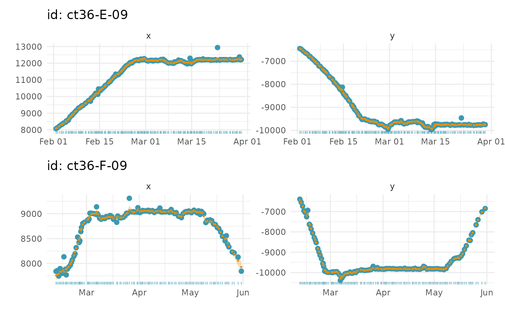

visualize fits from an ssm object
a aniMotum ssm fit object with class ssm_df
specify which location estimates to display on time-series plots: fitted, predicted, or rerouted
of plot to generate: 1-d time series for lon and lat separately
(type = 1, default); 2-d track plot (type = 2); 1-d time series of move
persistence estimates (type = 3; if fitted model was mp); 2-d track plot
with locations coloured by move persistence (type = 4; if fitted model was mp)
include outlier locations dropped by prefilter (outlier = TRUE, default)
opacity of standard errors. Lower opacity can ease visualization when multiple ellipses overlap one another
each individual is plotted on a separate page by default (pages = 0), multiple individuals can be combined on a single page; pages = 1
number of columns to arrange plots when combining individuals on a single page (ignored if pages = 0)
logical; if TRUE (default) user is asked for input before each plot is rendered. set to FALSE to return ggplot objects
grDevices::hcl.colors palette to use (see grDevices::hcl.pals()
for options)
logical; if plotting move persistence estimates from an mp
model fit, should estimates be normalised to 0,1 (default = TRUE).
logical; should g be normalised among individuals as a group,
a 'relative g', or to individuals separately to highlight regions of lowest
and highest move persistence along single tracks (default = FALSE).
additional arguments to be ignored
a ggplot object with either: (type = 1) 1-d time series of fits to data, separated into x and y components (units = km) with prediction uncertainty ribbons (2 x SE); or (type = 2) 2-d fits to data (units = km)
## generate a ssm fit object (call is for speed only)
xs <- fit_ssm(sese2, spdf=FALSE, model = "rw", time.step=72, control = ssm_control(verbose = 0))
#>
#>
# plot fitted locations as 1-D timeseries on 1 page
plot(xs, what = "f", pages = 1)
